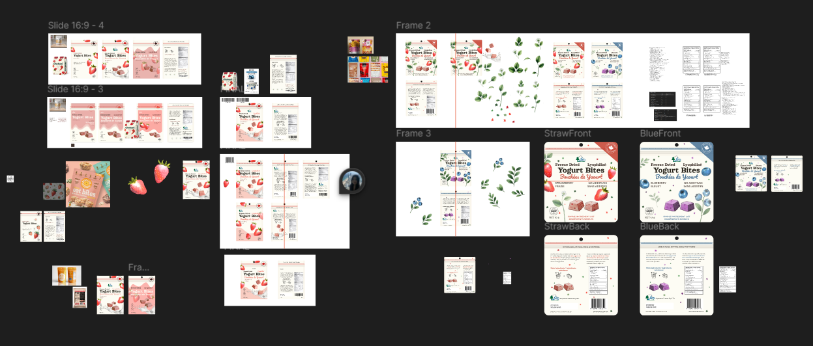
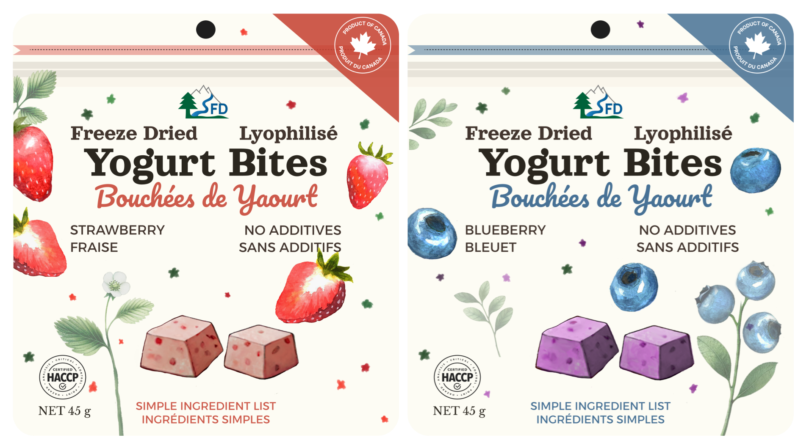
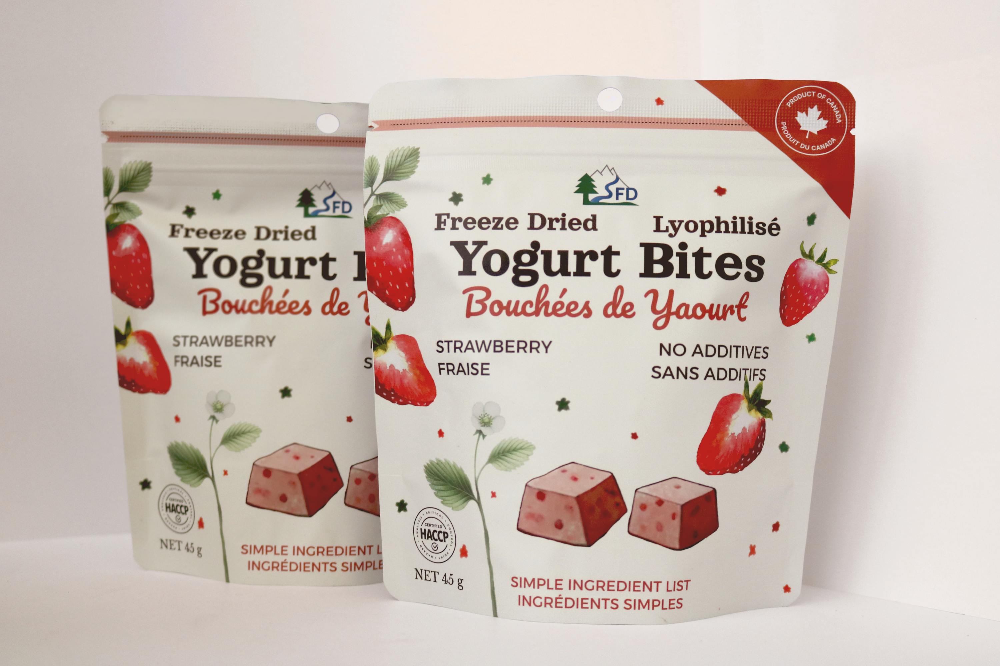
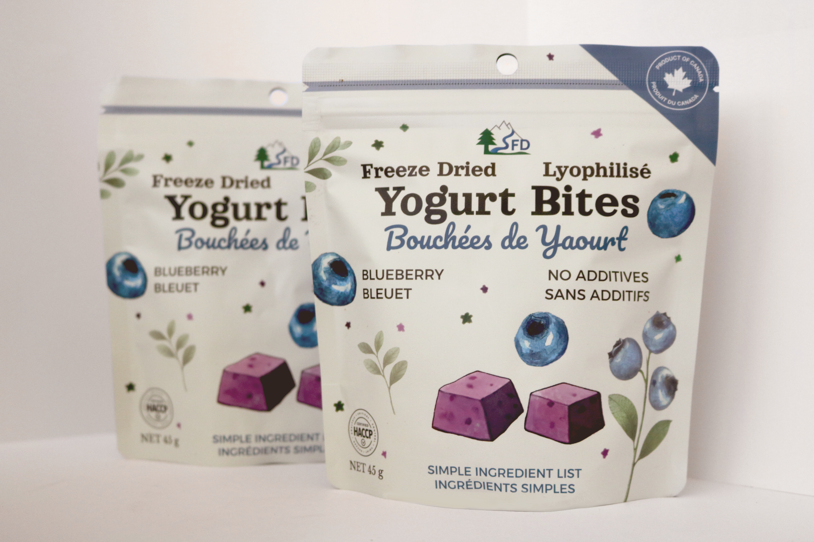

Package Design
Designing retail packaging from concept to prototype.
Project Overview
Two retail packages were developed for a new product line, from initial concept to full production-ready prototypes. The scope covered both creative and technical aspects, ensuring a cohesive product experience aligned with brand and regulatory standards.
In addition to visual design, work included generating a QR code through GS1, designing a nutritional label based on lab test results, and determining optimal net weight through pre-packing tests to identify a suitable size and format for distribution.
Process & Execution
Initial research focused on competitor packaging, visual trends, and shelf impact. Several design concepts were developed and refined based on client feedback. Figma and Photoshop were used to create hand-drawn artwork, mockups, and print-ready PDFs for the packaging.
Pre-packing trials were conducted to evaluate volume-to-weight efficiency and confirm label accuracy. Packaging elements, including legally required nutritional details and barcoding, were built to comply with industry standards.

Packaging prototypes includes various design iterations.
Challenges & Solutions
Since the product was still in development, changes to ingredients and unit weight led to adjustments in overall package size. Finding a standard bag that was print-friendly, shelf-ready aluminum barrier bag, and fit the updated product amount took several rounds of revision.
The packagings also had to meet Canada’s Consumer Packaging and Labelling Act, requiring all information to appear in both English and French. This added complexity to layout and space management, especially on smaller formats like the back of the packagings.
Impact & Outcome

Final packaging prototype.

Final packaging (in use).

Final packaging (in use).
The final packaging is currently in retail circulation. The design successfully balances shelf impact with technical requirements, ensuring moisture-barrier integrity for freeze-dried preservation while adhering to strict regulatory labeling standards

Digital mockup created from final print production for consistent e-commerce branding.
To support a multi-channel marketing strategy, I developed high-fidelity Photoshop mockups for e-commerce listings. These assets provide a consistent brand aesthetic across social media, promotional materials, and web storefronts, bridging the gap between physical retail and digital presence.